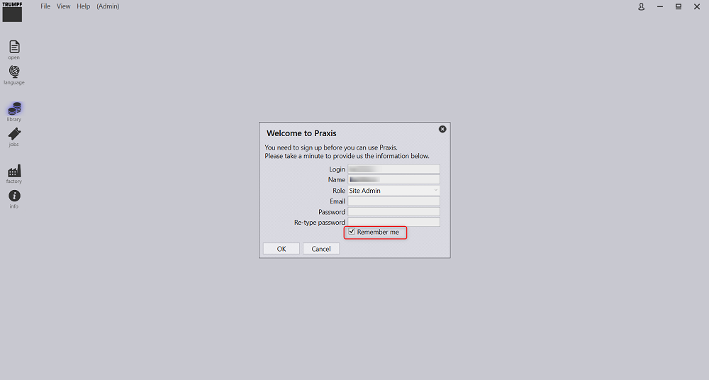

Instalação do servidor
Siga as instruções para instalar o Servidor TruSmartCAM juntamente com o SQL.
|
Direitos de Administrador
Para executar esta instalação, o usuário deve ter privilégios administrativos. |
-
Execute Setup.TruSmartCAM.<versão>.exe para iniciar a instalação.
| Versão é um número. |
-
Leia o contrato de licença e escolha I accept the agreement e então clique em Próximo .

Etapa 1 : Local de Instalação
-
Informe o diretório de instalação ou aceite o padrão de instalação
C:\Program Files\Metamation\Praxise clique em Próximo.-
C:\Program Files\Metamation\Praxis- A pasta de instalação conterá as seguintes pastas: Bin, MetaCAM, Samples e Tracker. -
C:\Program Data\Metamation- A pasta de Dados conterá as seguintes pastas: TruSmartCAM, TecZone e MetaCAM.
-

Etapa 2 : Seleção de Componentes
| Tipo de Instalação | Componentes |
|---|---|
Full |
Servidor + Cliente Desktop + Motor |
Client |
Cliente Desktop |
Server |
Servidor + Cliente Desktop |
Station |
Seleciona todos os Terminais de Estação como TecZone, MetaCAM, RightAngle(Controlador de Dobra), Vulcan(Controlador de Máquina a Laser) |
Custom |
Seleção pelo usuário. |
-
Escolha Instalação Full. Selecione Code Senders e Bend Code Senders em TruSmartCAM Tools. Agora o tipo de Instalação muda para Personalizado. Clique em Próximo.

Etapa 3 : Escolher Instalar SQL Server
|
A instalação do SQL Express 2022 é necessária apenas para o Servidor TruSmartCAM. Esta opção não está disponível para instalações Client e Sync. Além disso, é marcada como ON e instalada pela primeira vez e pode ser ignorada posteriormente. Se o SQL já estiver instalado no servidor TruSmartCAM, o usuário pode ignorar a Etapa 3. |
-
Em Select Additional Tasks: Clique em Install SQL Express e clique em Próximo.
-
Em Ready to Install: Resume todos os recursos de instalação e clique em Install.

Etapa 4 : Instalação do SQL Server
Uma vez que os componentes do TruSmartCAM são instalados, o instalador prossegue com a instalação do SQL Server. Aceite o Contrato de Licença para prosseguir e instale o SQL Express com as opções padrão.

Uma vez que a instalação estiver concluída, clique em Close e finalize a instalação.

| Dependendo da versão do Windows, fechar a instalação do SQL pode solicitar uma reinicialização. |
Etapa 5 : Atalhos na Área de Trabalho do Windows
-
Após a instalação do SQL, se o Sistema não reiniciar, selecione a caixa de seleção Launch TruSmartCAM e clique em Finish.
-
Se o Sistema reiniciar, inicie pelo ícone de atalho TruSmartCAM na Área de Trabalho ou digite TruSmartCAM no Menu Iniciar do Windows e Execute como administrador.
| Instalação do Servidor: Os ícones de atalho TruSmartCAM e TruSmartCAM License estão disponíveis na Área de Trabalho. + Instalação Client/SYNC: Apenas o ícone de atalho TruSmartCAM está disponível na Área de Trabalho. |

Etapa 6 : Registro de Licença
-
No campo Serial Number, digite a chave Serial do TruSmartCAM fornecida pela Equipe de Serviço da Trumpf Metamation. Digite <Nome da Empresa> no campo "Registered to" e E-Mail. Clique em OK.

|
Caso o firewall da rede bloqueie o registro de licença ou não haja internet no PC do Servidor TruSmartCAM, a licença do TruSmartCAM é feita por ativação Offline. Envie por e-mail o Prax.request da pasta C:\ProgramData\Metamation\Praxis para a Equipe de Serviço da Trumpf Metamation. A equipe Trumpf Metamation fornecerá o Prax.lock que precisa ser colocado nesta pasta. |
Etapa 7 : Configuração Inicial Única
-
Digite o Nome do Banco de Dados e Defina o Local de Armazenamento de Dados. Selecione a caixa de seleção Usar Servidor SQL e selecione o nome do SQL Server para conectar ao Banco de Dados. Clique em OK.

-
O Cliente Desktop TruSmartCAM abre mostrando Database Connection Succeeded na parte inferior.
-
Os arquivos de configuração do TruSmartCAM, TecZone e MetaCAM foram criados com máquinas de configuração padrão ou contra as máquinas de licença do TruSmartCAM. A mesma configuração será compartilhada entre todos os Clientes TruSmartCAM.

A tela de boas-vindas é exibida com o Nome de Login do Usuário Windows como Login e Nome do TruSmartCAM. O primeiro Usuário TruSmartCAM é considerado como Administrador do site. Forneça Email e Senha. Clique em OK .
Selecione a caixa de seleção Lembrar de mim para salvar as credenciais de login para a próxima vez. Desmarque a caixa de seleção Lembrar de mim para solicitar o diálogo de login e senha sempre que o aplicativo TruSmartCAM for iniciado.

Etapa 8 : Login no TruSmartCAM
-
Feche o TruSmartCAM e reabra-o. O sistema solicita que você insira as credenciais de login do TruSmartCAM.

-
O nome de usuário conectado é exibido ao lado do ícone do usuário no cabeçalho do aplicativo TruSmartCAM.

-
Quando você passa o mouse sobre o ícone do usuário, o sistema exibe:

-
A função do usuário (por exemplo: Programador, Admin).
-
Um atalho para sair: Ctrl+L.
-
-
Clicar no ícone do usuário abre um menu que permite:

-
Editar informações… - Atualizar os detalhes do seu perfil.
-
Alterar senha… - Alterar a senha da sua conta.
-
Fazer logout - Sair do aplicativo.
-
Cancelar - Fechar o menu sem fazer alterações.
-
Etapa 9 : Configuração de Máquinas da Fábrica
-
Licença TruSmartCAM [Todas as máquinas habilitam bit de licença]: Máquina e Material padrão do TruSmartCAM são considerados como Configuração da Fábrica.
-
Licença TruSmartCAM [Sem demo e poucos bits de máquina habilitados]: Essas poucas máquinas e Material padrão são considerados como Configuração da Fábrica.
-
(Open → Import) uma nova Peça de
C:\Program Files\Metamation\Praxis\Samples\Partse verifique se a Peça foi importada com sucesso.

Nota 1 : Monitor TruSmartCAM
-
Monitor TruSmartCAM com Instalação de Motor (direitos de Site admin):
-
O Monitor TruSmartCAM com Motor juntamente com direitos de Site Admin do TruSmartCAM terá as seguintes opções:
-
Enviar configuração do TruSmartCAM, TecZone, MetaCAM para todos os Clientes TruSmartCAM. Também tem direitos para criar Novo Login de Usuário TruSmartCAM.
-
Show Agents mostrará o total de motores disponíveis para realizar tarefas de automação que estão contra a Licença TruSmartCAM.
-
-

-
Monitor TruSmartCAM sem Instalação de Motor (direitos de Site admin):